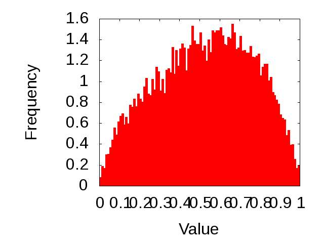

The crux search-for-matches tool can report statistical confidence measures in the form of p-values. In this test, we measure the extent to which these p-values are uniformly distributed for scores drawn according to the null hypothesis. We use as a null model scores generated by searching real spectra against synthetic (shuffled) protein sequences. Uniformity of the p-values is visualized by plotting a histogram and a quantile-quantile (QQ) plot of the p-value distribution. A perfect histogram will be uniform in the interval [0,1]. A perfect QQ will follow the line y=x. We plot the QQ plot on a log scale, and include lines corresponding to y=2x and y=0.5x. Ideally, the statistic will stay within these boundaries over multiple orders of magnitude.
|  | |
|
|
N.B. As of 30 November 2012, the calibration test is not working. Indeed, as far as I can tell, it never worked, even when I initially created it in August 2010.
WSN
30 November 2012